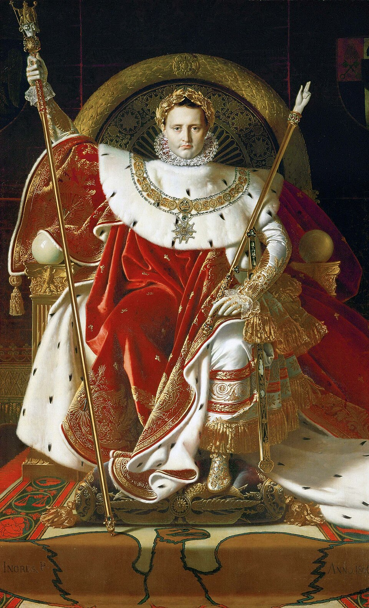
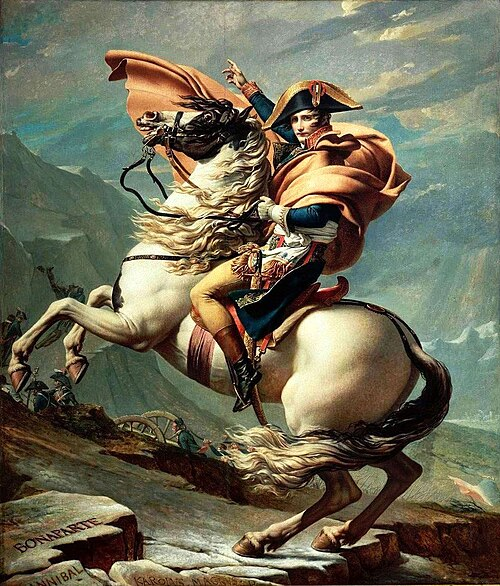

Siapa Itu Napoleon?
Napoleon Bonaparte (15 Agustus 1769 - 5 Mei 1821) adalah seorang jenderal militer dan kaisar Prancis yang memerintah dari tahun 1804 hingga 1814, dan kembali sebentar pada tahun 1815. Ia dianggap sebagai salah satu pemimpin militer terbesar dalam sejarah.
Napoleon lahir di Ajaccio, Corsica (saat itu baru saja dibeli oleh Prancis). Ia naik pangkat dengan cepat selama Revolusi Prancis, memenangkan serangkaian kemenangan gemilang. Pada tahun 1799, ia merebut kekuasaan dalam Kudeta 18 Brumaire dan menjadi Konsul Pertama.
Pada tahun 1804, ia memahkotai dirinya sendiri sebagai Kaisar Prancis. Sepanjang karirnya, ia memimpin pasukannya dalam Perang Napoleon yang melibatkan hampir seluruh Eropa. Puncak kejayaannya adalah menguasai hampir seluruh daratan Eropa.
Namun, invasi ke Rusia pada tahun 1812 menjadi awal kehancurannya. Ia diasingkan ke Pulau Elba, lalu kembali berkuasa selama "100 Hari", sebelum akhirnya dikalahkan dalam Pertempuran Waterloo (1815). Napoleon meninggal dalam pengasingan di Pulau Saint Helena pada tahun 1821.

Garis Waktu Perjalanan Napoleon
Lahir
Lahir di Ajaccio, Corsica, dari keluarga bangsawan kecil.
Kampanye Italia
Memimpin pasukan Prancis meraih kemenangan besar melawan Austria.
Kudeta Brumaire
Merebut kekuasaan Prancis, menjadi Konsul Pertama.
Menjadi Kaisar
Memahkotai dirinya sebagai Kaisar Prancis di Notre-Dame.
Invasi Rusia
Bencana besar: 500.000 tentara tewas atau hilang di musim dingin Rusia.
Waterloo
Kekalahan telak melawan Inggris & Prusia, diasingkan ke Saint Helena.
Wafat
Meninggal dalam pengasingan di usia 51 tahun (diduga karena kanker lambung).
Galeri & Etalase

Napoleon Melewati Alpen
Lukisan terkenal karya Jacques-Louis David (1801)

Pertempuran Eylau (1807)
Salah satu pertempuran paling berdarah
Mahkota Kekaisaran
Simbol kekuasaan Napoleon sebagai Kaisar

Penobatan Napoleon
Upacara penobatan di Notre-Dame, 1804